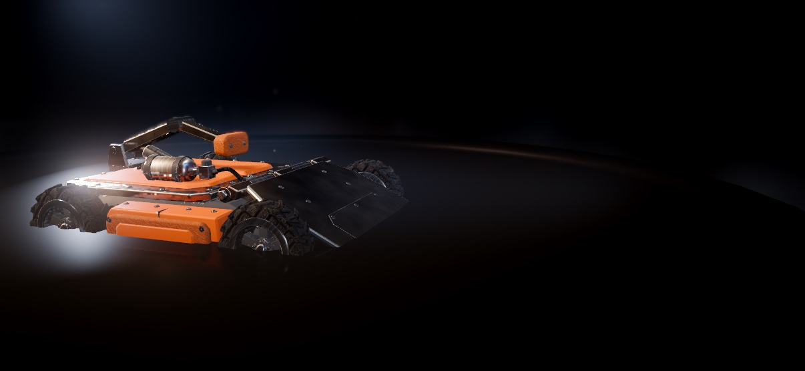

The starter wedge with a flipper, on the four stage shots the owner picked: M2 face-off,
M1 showroom, G1 garage and G2 part pull-out. Each row is the target, what the engine drew
before wave A, and what it draws now (25 September 2026, desktop Forward+ at 1434 x 660,
high tier, the committed models and materials). The verdicts are blunt on purpose: the
after shots are a clear step up from before and still well short of the targets.
M2 face-off (main menu with a next opponent)
Director shot faceoff: 50 mm lens 0.26 m off the floor, platform retracted, hero warm on the left, opponent cold on the right.
TargetBeforeAfter
Now matches
The composition: hero large and low on the left, three quarters to the lens, opponent across the floor at about three quarters of the width, warm left and cold right.
Wheels stand on the floor (owner bug fixed, measured to the millimetre).
No blown white bloom on the wedge any more (it was the cold rim's specular on bare steel).
Still short
The floor reads black. The target's foreground is lit wet steel plate with rivets catching warm light; ours has the plates but almost no light lands on them.
No visible haze or dry ice. The target is thick with it in both beams.
The opponent is small, dim and reads as a grey box: its vertical spinner disc does not register at this size. The target's opponent is a third of the frame height and rim lit hard.
The hero is a low flat box with a plate on the front. The target's hero is a tall sculpted armour shell with chunky tyres. That gap is the model, not the light.
Black void behind. The target has a hall: truss, lamp rows, depth.
Honest distance: about a third of the way to the target.
M1 showroom (main menu, no opponent)
Director shot showroom: 50 mm, turntable at 5 degrees a second, now opening three quarters to the lens.
TargetBeforeAfter
Now matches
The machine fills the frame and opens on the flattering three quarter angle instead of a flat side profile.
Warm key, cold rims, a soft floor reflection; the materials read as painted steel and rubber.
Still short
The turntable plinth is invisible: the gloss black disc vanishes into the floor. The target's plinth is a lit steel drum you can read.
No dry ice rolling off the plinth, no overhead light bars, no bokeh practicals.
A soft white glint still blooms off a rear wheel when the swinging rim crosses it.
Same model gap as the face-off.
Honest distance: about a third of the way.
G1 garage (assembly bay)
Director shot garage: 40 mm, machine at 31 percent across so the SwiftUI panel can own the right.
TargetBeforeAfter
Now matches
Framing: machine left of centre, three quarters, room for the panel on the right; orbit with inertia and turntable pause are in.
Still short
There is no assembly bay. The target's whole identity is the room: a grey workshop wall hung with wheels and armour, a gantry arm, a big softbox panel in frame. We have a black void.
The machine is smaller in frame than the target's (roughly 40 percent of the width against 60).
A white rim glint on the left rear wheel.
Honest distance: about a quarter of the way. The room is the missing piece and it is art, not lighting.
G2 part pull-out (garage focus on the weapon)
Director shot part:weapon: 70 mm, the category's bodies pulled 11 cm out, near and far depth of field.
TargetBefore (no part focus existed)After
Now matches
The closest of the four: a warm product shot of the flipper plate with shallow focus, the brushed steel and bolt heads read well.
Still short
The target is a full exploded view: every category floated apart, loose bolts in the air, a pegboard of tools behind. We slide one category out by 11 cm, which barely shows at this angle.
No room behind, again.
Honest distance: about 40 percent of the way.
Owner bug: wheels through the floor on stage screens
Fixed. The stage now stands every machine on its lowest ground contact (wheel bodies, track belts, legs, hover skirt), measured from the render geometry.

Before: wheels sunk by their radius on the raised turntableAfter: every drive within 2 mm (tested, vertex exact)
What would close the gap, in order of payoff
Gap
Owner
Why it matters
Hero model: a sculpted armour shell and taller tyres
Models
Every target reads premium first because of the machine's silhouette.
Garage room: parts wall, gantry, softbox in frame
Stage and kit art
G1 is a room; without it the garage is a void.
Light on the floor and visible haze
Stage
M1 and M2 get their depth from lit wet steel and dry ice.